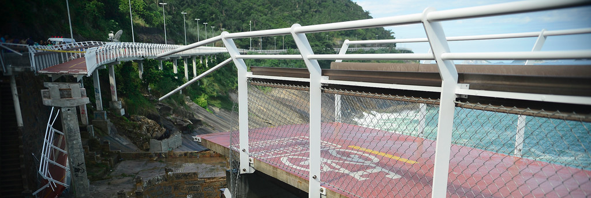

Curadoria do Desabamento da ciclovia Tim Maia
Objetivo: levantamento, no DOM do Rio de Janeiro, dos custos e responsabilidades pela construção da ciclovia Tim Maia, que desabou em abril de 2016.
Inicio: 2016-07-31
Curadores
- João Meirelles (joaomeirelles)
- Henrique Lorea (henriquelorea)
- Bruna Santos (membro da OKBR e zeladora da curadoria)
- Peter Krauss (ppkrauss membro da OKBR)
- ... estamos aguardando a sua participação!
Origem e motivações do projeto

O acidente da ciclovia Tim Maia, obra da Concremat motivou um grupo de amigos a passar a noite em busca de informações sobre contratos da empreiteira com a cidade do Rio. O único caminho viável para executar esta tarefa hercúlea foi tentar extrair as informações do diário oficial da cidade. A tarefa os alertou para o quão valioso seria um script capaz de extrair sistematicamente informações do diário oficial da cidade e torná-las verdadeiramente abertas. As possibilidades a partir daí seriam inúmeras. Em excel, gráfico, verso e prosa.
O Diário Oficial é como um blog importantíssimo que poucos leem. No fomato e linguagem atuais, o Diário é "aberto" apenas por alguns usuários descontentes. Na tentativa de torná-lo aberto e reutilizável, não só no formato, mas na linguagem, iniciamos uma saga não só de programação, mas de idealização desse projeto que chamamos carinhosamente de "nosso querido diário oficial". A empreitada chamou a atenção do Govlab em NY, onde foi realizado um coaching, entre agosto e outubro de 2016.
Entre agosto e setembro de 2016, Bruna Santos e Henrique Lorea, dois dos amigos que iniciaram a extração das informações do DO carioca com a OKBr. Organização da qual Bruna é membro. Em um dos encontro para planejamento estratégico em 2016, Peter ficou sabendo, e sugeriu unificar os requisitos do QueriDO com o Diário Livre, desenvolvido pelo COLAB-USP e apoiado pela OKBr, criando aqui no git coletivo okfn-brasil uma iniciativa mais ampla... Partes do código do Diário Livre, como o trazdia do Andres é semelhante ao que vinham desenvolvendo no QueriDO.
No final de dezembro de 2016, com chegada de um voluntário animado, o Marco, decidimos criar um plano de metas para 2017: é o que está resumido na seção acima dos objetivos.
Levantamentos preliminares
Foram pesquisadas todas as edições do Diário Oficial do Município (DOM) do Rio de Janeiro, e encontradas citações da empresa responsável pela construção da ciclovia, a CONCREMAT, de 2012 a 2016. Apenas separatas com alguma citação explícita foram requisitadas, para primeira análise e triagem.
Endossos e revisores desta página
Além dos revisores listados no histórico desta página, curdores que endossam o seu conteúdo:
- Bruna Santos
- Marco Zanchi
- Você curador: edite o arquivo para acrescentar seu nome aqui, precisamos no mínimo 2 curadores endossando (atestando que concorda com todo o contedo acima) para iniciar o processo.